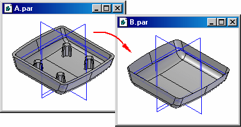
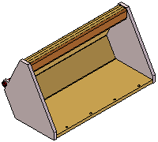
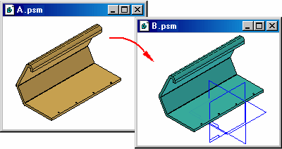
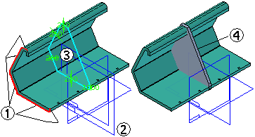
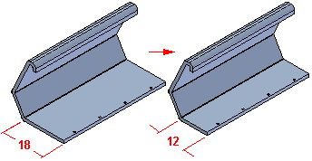
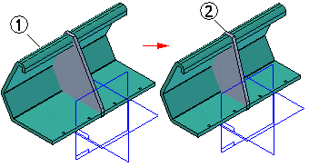

Part Copy command
Use the Part Copy command to insert geometry from another document into the current part or sheet metal document. The geometry is inserted as a Parasolid body and can be placed associatively (if in the ordered environment) or non-associatively. Inserting a part copy in the synchronous environment is non-associative. You use the Part Copy Parameters dialog box to specify which geometry you want to copy and whether you want to mirror, scale, or flatten the copied geometry.
When naming a document that contains a copied part, you should avoid using the same name as the original document, as this may cause problems later. For example, if you place both documents into an assembly, problems can occur during replace operations or other assembly revisions. Although you can use the same name, a warning dialog box appears the first time you save the copied part document.

You can copy geometry from the following file types:
-
Solid Edge Part (.par)
-
Solid Edge Sheet Metal (.psm)
-
Solid Edge Assembly (.asm)
-
NX Part (.prt)
-
Parasolid documents (.X_B, .X_T)
-
DirectModel (.jt)
The part copy functionality also allows you to use a bottom-up design approach to create and modify related parts outside the context of an assembly.
Inserting the copy
To create a part copy, use the Select Part Copy dialog box to select the parent document from which you want to copy the geometry. The part copy is converted into a Parasolid body and is placed into the new document in the same position and orientation it occupies in the original document.
If you insert the part copy before other design geometry is constructed, you can place the part copy as a base feature or as construction geometry. If you insert the part copy after other design geometry is constructed, you can place the part copy only as construction geometry. For example, if the document in which you are copying the geometry contains a model that consists of protrusions, cutouts, holes, and so on, you can only insert the part copy as construction geometry.
If the document in which you are copying the geometry contains only construction geometry, or is empty, you can insert the part copy as construction geometry or as the base feature.
Different colors are used to indicate whether the copied geometry was placed as construction geometry or as a base feature.
Setting options
When copying geometry from a Part or Sheet Metal document that contains multiple solid, surface or curve bodies, you can use the Part Copy Parameters dialog box to specify which bodies you want to copy. Select the bodies you want to copy, then click the Apply button to display the bodies in the graphic window. You can also use the Part Copy Parameters dialog box to add or remove bodies from the document later. You can only copy entire bodies, not portions of bodies.
To specify whether you want the part copy to be associative (ordered environment only), or to mirror, scale, or flatten the copy, set options on the Part Copy Parameters dialog box.
Moving and rotating part copies
If you want to move or rotate the part copy, attach the part copy to a coordinate system using the Part Copy Parameters dialog box. You can then move and rotate the part copy by changing the offset values of the coordinate system.
Associative part copies and bottom-up design
By default, part copies placed in the ordered environment are associative. If you change the original document, you can update the part copy. Associative part copies can be useful when using the bottom-up design approach, because you can model a key component, then use an associative part copy of that component in a new document to make it easier to design and modify the second component.
Associative part copies are useful when working with tightly related components that share common characteristics, such as parts that will make up a weldment.

After you complete the design of a key component (A.PSM), you can place an associative part copy of the component into a new document (B.PSM).

You can then use the part copy to make it easier to design the new component. For example, you can use the Project to Sketch command to associatively copy edges (1) onto the profile plane (2) to create a profile (3) for the base feature (4) on the new part. You can also add new elements to the profile and modify the associatively included elements by trimming them where required to create a closed profile for the base feature.

Later, you can open the original part, make design changes, and save the changes.

You can then open the part where you used the associative part copy (1). You can update the part copy, and the associative geometry (2) in the part updates.

Using associative design techniques not only allows you to design mating parts more quickly, it also can ensure that related components continue to fit properly when design changes are made.
Updating part copies
When using associative part copies, you can use the Part Copy Parameters dialog box to specify how the part copy is updated when you open the child document:
-
Automatically update part copies when you open the child document.
-
Manually update the part copies. You can use the Update Links command on the PathFinder shortcut menu to manually update a part copy.
-
Prompt for update when you open the child document.
When part copies are not automatically updated, and a part copy is out-of-date with respect to the parent document, the part copy feature is displayed on the Error Assistant dialog box to warn you that it is out-of-date.
An out-of-date symbol is also be displayed adjacent to the part copy feature in the PathFinder tab.
Managing associative part copy data sets
When working with associative part copy data sets, you must manage the parent and child documents as a group or you can break the associative link between the parent and child documents. For example, if you use the Part Copy command to insert an associative part copy of a part into another document, then move or rename the parent document without using Design Manager exists. You can then use the construction body option instead.
If any of the parts in the assembly contain surface or curve bodies, the surface or curve bodies are not copied. If you make design changes to the assembly, such as adding or removing parts, the part copy can be updated with the Update Link command.
When creating a part copy using an alternate assembly document, the Assembly Member dialog box is displayed so you can select the assembly member you want.
If you convert an existing assembly to an alternate assembly, and that assembly was used as the basis for a part copy document, the default member is used.
How do I
Create a part copyPaste an element with a different format
Learn more
Inserting part copiesLook up more details
Part Copy command barPart Copy Parameters dialog box
Update Part Copies dialog box
Update Part Copies dialog box (Out-of-Date Parts)
Select Part Copy dialog box
Paste Special command
Paste Special dialog box